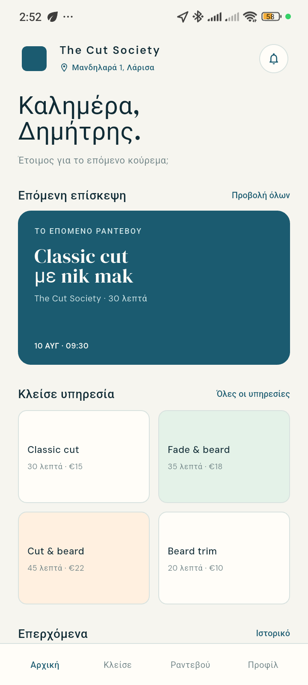
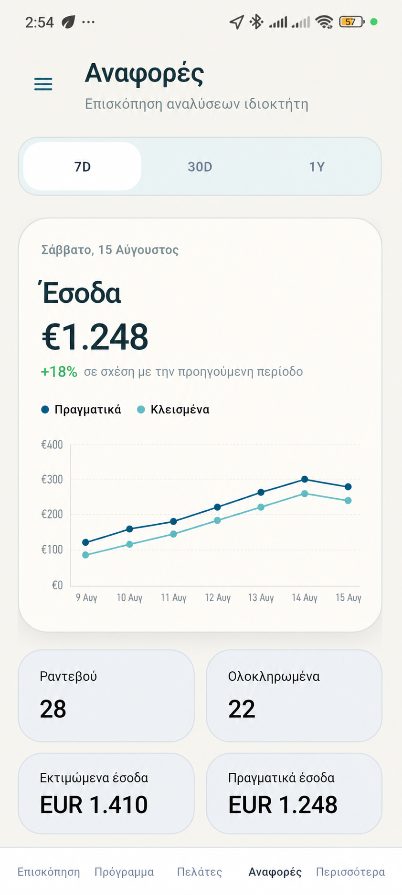
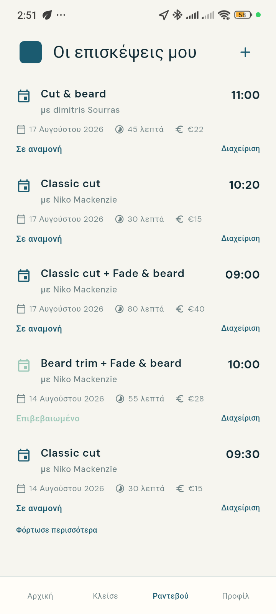
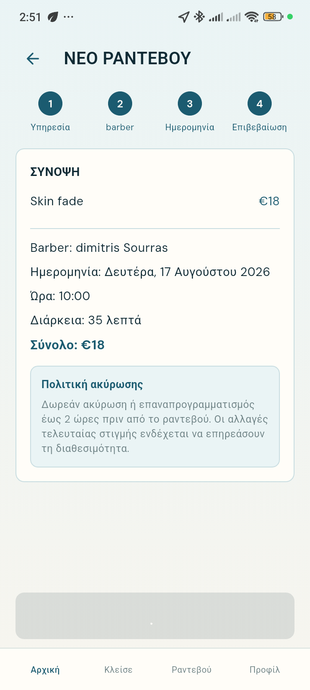
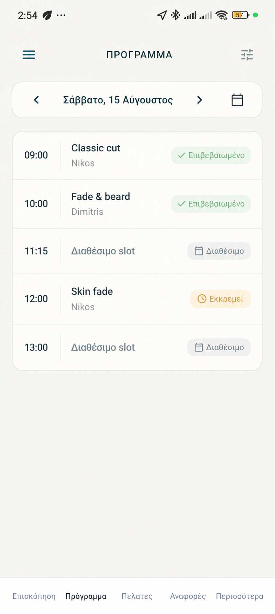
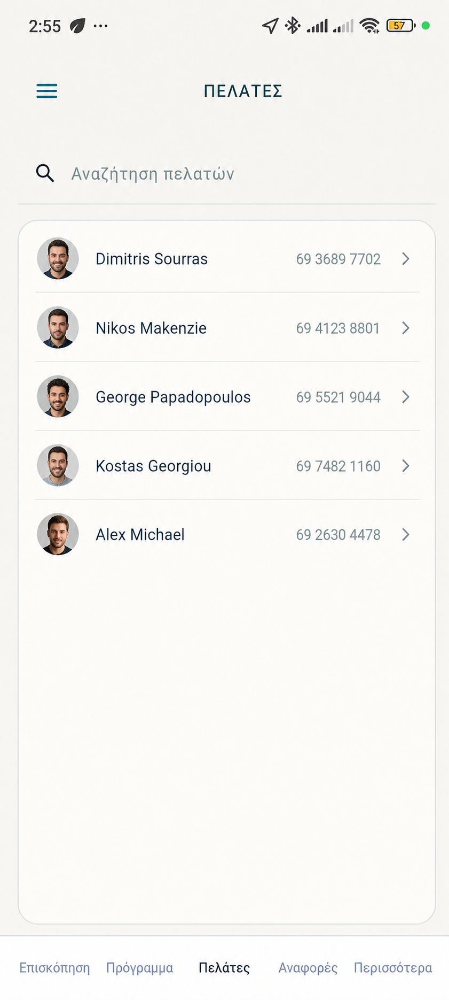

YOUR BARBER SHOP / YOUR RELATIONSHIP
Το barber shop σου δεν χρειάζεται άλλη μία καταχώριση.
Χρειάζεται το δικό του app.
Το Barberin συνδέει το κατάστημά σου με δύο καθαρές εμπειρίες: το Barberin για owner και barbers και το customer app του shop για τους πελάτες. Κάθε κατάστημα αποκτά τη δική του αποκλειστική ψηφιακή παρουσία, με το δικό του όνομα, τις δικές του υπηρεσίες και τη δική του ομάδα, μέσα από προσωπικό QR code ή link.


SMART BOOKING ENGINE
Το customer app κρατάει τον πελάτη. Το Barberin κρατάει τη μέρα σου.
Τα ραντεβού κλείνονται απευθείας από την εμπειρία του shop σου. Το Barberin και το backend υπολογίζουν live τη διαθεσιμότητα, χωρίς τηλεφωνήματα, χειροκίνητους υπολογισμούς και τεχνητά κενά.
Κράτηση 24/7
Ο πελάτης επιλέγει service, barber, ημέρα και ώρα από το προσωπικό shop flow, χωρίς να διακόπτει τη δουλειά σου.
Πραγματική διάρκεια
Η διαθεσιμότητα υπολογίζεται από τη διάρκεια των υπηρεσιών και των extras, ώστε το επόμενο ραντεβού να ξεκινά όταν πραγματικά τελειώνει το προηγούμενο.
Όλοι οι κανόνες μαζί
Υπολογίζονται το προσωπικό πρόγραμμα κάθε barber, τα διαλείμματα, τα κλειστά days, οι αργίες, η χωρητικότητα ανά slot και τα ενεργά ραντεβού.
Live προστασία κράτησης
Πριν αποθηκευτεί ένα ραντεβού, το σύστημα ελέγχει ξανά ότι το slot παραμένει διαθέσιμο και αποφεύγει διπλές κρατήσεις.
THE DIFFERENCE
Ο πελάτης ανοίγει το δικό σου app. Απευθείας από το brand σου.
Το barber shop σου έχει τη δική του αποκλειστική ψηφιακή εμπειρία. Ο πελάτης μπαίνει από το προσωπικό QR code ή link του καταστήματος και βλέπει μια εφαρμογή φτιαγμένη γύρω από το δικό σου όνομα, τη δική σου ομάδα και τις δικές σου υπηρεσίες.
Ένα QR code ή link οδηγεί απευθείας στο shop σου.
Το όνομα, οι υπηρεσίες και η ομάδα σου μένουν στο επίκεντρο.
Ραντεβού, barbers, διαθεσιμότητα, services και reports από ένα app.
Η εμπειρία του πελάτη μένει αποκλειστικά στο δικό σου shop.
TWO APPS / ONE PRIVATE EXPERIENCE
Δύο ξεχωριστές εφαρμογές. Ένα ενιαίο shop flow.
Ο πελάτης έχει τη δική του branded εμπειρία. Ο owner και οι barbers έχουν το δικό τους εργαλείο λειτουργίας. Οι δύο πλευρές συνδέονται live, χωρίς να μπερδεύονται.
Υπηρεσίες, barbers, διαθέσιμα slots, κρατήσεις και επισκέψεις μέσα στο app του shop.
Overview, schedule, appointments, ομάδα, services, reports και καθημερινός έλεγχος.

Ο πελάτης ανοίγει το app του δικού σου shop.
Με προσωπικό QR code ή link, ο πελάτης μπαίνει απευθείας στη δική σου εμπειρία. Βλέπει το brand, τις ενεργές υπηρεσίες, τους barbers, τα πραγματικά διαθέσιμα slots και τις επισκέψεις του.
- Προσωπικό QR code ή link ανά shop
- Υπηρεσίες, barbers και διαθεσιμότητα του καταστήματος
- Bookings, reschedule, cancel και notifications

Το κέντρο ελέγχου της καθημερινής λειτουργίας.
Το Barberin είναι το owner και barber app: κρατάει το πρόγραμμα, τα appointments, την ομάδα, τα services και τα reports σε μία καθαρή εικόνα, ώστε το shop να λειτουργεί χωρίς περιττά τηλεφωνήματα και κενά.
- Live overview, schedule και manual appointments
- Services Management, barbers και ωράρια
- Reports, alerts και business clarity
OWN THE RELATIONSHIP
Η διαφορά είναι ποιος μένει στο μυαλό του πελάτη.
HOW IT WORKS
Απλό για τον πελάτη. Απόλυτο για τον owner.
Στήνουμε το shop σου
Όνομα, logo, services, barbers, ωράρια και κανόνες της καθημερινής λειτουργίας.
Ο πελάτης μπαίνει απευθείας
Σκανάρει το προσωπικό QR ή ανοίγει το link του shop και βρίσκει το σωστό service και slot.
Εσύ έχεις τον έλεγχο
Διαχειρίζεσαι live όλη την ημέρα και βλέπεις τι πραγματικά συμβαίνει στο κατάστημα.
BUILT FOR THE REAL DAY
Ό,τι χρειάζεται ένα σύγχρονο barber shop.
Ολοκληρωμένη διαχείριση ραντεβού
Online και manual appointments, πραγματική διάρκεια υπηρεσιών, προσωπικό πρόγραμμα barber, live slots, rescheduling και blocked dates.
Η ομάδα σου, με τους κανόνες σου
Services Management, ανάθεση υπηρεσιών ανά barber, εβδομαδιαίο πρόγραμμα και ειδικές αργίες ή διακοπές.
Ενημέρωση τη στιγμή που χρειάζεται
Push και in-app notifications για confirm, reschedule, completed, no-show και cancel.
Η επιχείρηση σε καθαρή εικόνα
Revenue, completion rate, demand, customer intelligence, barber performance, financial clarity και operational alerts.
IN THE APPS
Η εμπειρία όπως τη βλέπει ο πελάτης και όπως τη διαχειρίζεσαι εσύ.
Η εμπειρία του πελάτη
Το app του shop για κράτηση, επισκέψεις και άμεση ενημέρωση.



Η καθημερινή διαχείριση του owner και των barbers
Overview, πρόγραμμα, πελάτες και reports σε ένα app λειτουργίας.


SIMPLE, SERIOUS, CLEAR
Μία επένδυση στη δική σου σχέση με τον πελάτη.
QUESTIONS, ANSWERED
Όσα χρειάζεται να ξέρεις πριν ξεκινήσεις.
Πώς αποκτά ο πελάτης πρόσβαση στο app του shop;
Το κατάστημα του στέλνει το προσωπικό QR code ή link. Με αυτό ανοίγει απευθείας τη δική του branded εμπειρία, χωρίς αναζήτηση και χωρίς κοινό κατάλογο καταστημάτων.
Είναι ξεχωριστή εμπειρία για κάθε κατάστημα;
Ναι. Κάθε shop έχει το δικό του όνομα, τις δικές του υπηρεσίες, τους δικούς του barbers και τη δική του customer εμπειρία. Ο πελάτης μπαίνει απευθείας από το προσωπικό QR ή link του καταστήματος.
Τι κάνει ο πελάτης μέσα στο customer app;
Βλέπει τις ενεργές υπηρεσίες, τους διαθέσιμους barbers και τα πραγματικά slots του shop, κλείνει ραντεβού, βλέπει τις επισκέψεις του και λαμβάνει ενημερώσεις για κάθε αλλαγή.
Τι κάνει ο owner μέσα στο Barberin;
Βλέπει το πρόγραμμα live, δημιουργεί manual appointments, αλλάζει ή ακυρώνει ραντεβού, διαχειρίζεται barbers και services, κλείνει ημέρες και βλέπει reports και operational insights.
Μπορώ να ορίσω διαφορετικό πρόγραμμα ανά barber;
Ναι. Το σύστημα υπολογίζει το προσωπικό ωράριο, τη διαθεσιμότητα, τα breaks, τις υπηρεσίες που προσφέρει κάθε barber και τα ήδη κλεισμένα ραντεβού πριν εμφανίσει ένα slot.
Μπορώ να έχω περισσότερα από ένα καταστήματα;
Ναι. Κάθε shop έχει ξεχωριστές ρυθμίσεις και συνδρομή, ενώ ο owner μπορεί να τα διαχειρίζεται από το ίδιο registration. Ο πελάτης μπαίνει πάντα στο σωστό shop μέσω του αντίστοιχου QR ή link.
Οι υπηρεσίες είναι έτοιμες ή μπορώ να τις αλλάξω;
Το shop επιλέγει τις ενεργές υπηρεσίες, προσθέτει custom services και μπορεί να ορίσει ποια υπηρεσία προσφέρει κάθε barber. Οι αλλαγές περνούν live στο customer app του shop.
Χρειάζομαι τεχνικές γνώσεις;
Όχι. Συζητάμε τη λειτουργία του barber shop, ετοιμάζουμε το setup και σου παραδίδουμε ένα περιβάλλον που μπορείς να χρησιμοποιείς καθημερινά από το κινητό.
READY WHEN YOU ARE
Το επόμενο ραντεβού μπορεί να ξεκινά από το δικό σου shop flow.
Πες μας λίγα πράγματα για το barber shop σου και θα σου δείξουμε πώς μπορεί να στηθεί η δική σου customer εμπειρία και η καθημερινή διαχείριση στο Barberin.
Απαντάμε προσωπικά και προσαρμόζουμε την παρουσίαση στη λειτουργία του καταστήματός σου.